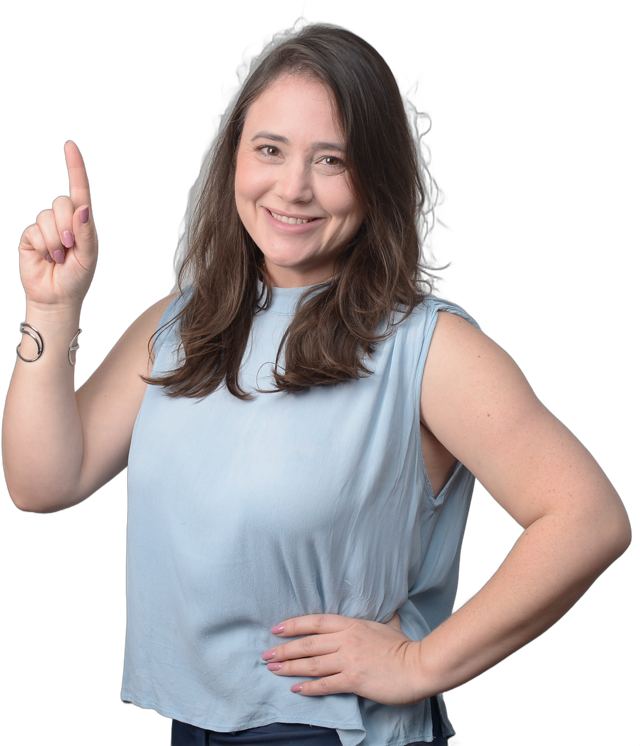
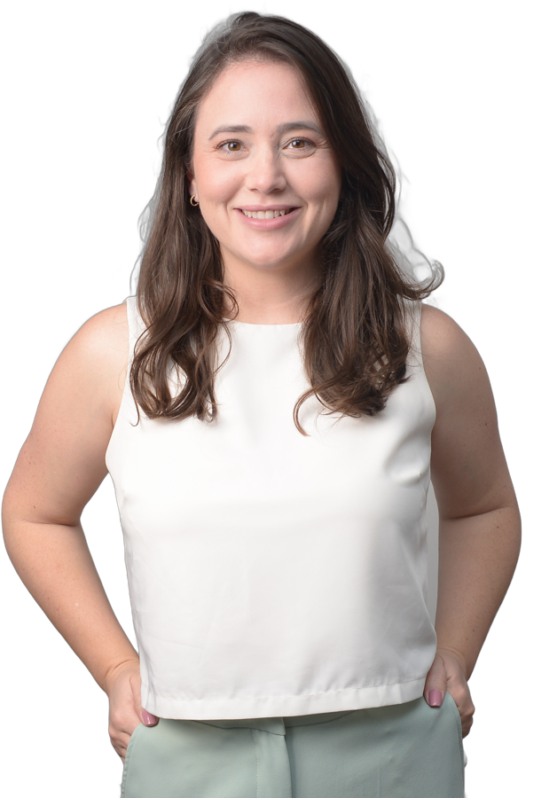
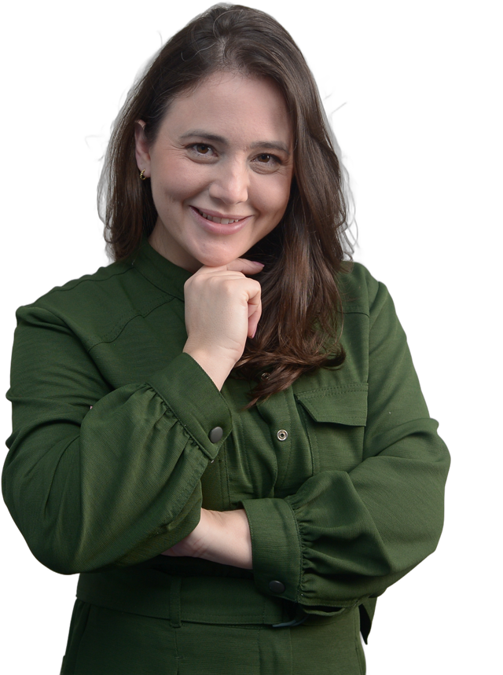

Manual do Recém-Nascido · estudo de fontes e acabamento · 29/10/2026
Fontes, fundos e a foto da Day
A mesma lâmina em 9 combinações de fonte (título, texto e a frase da Day), cada uma num fundo da paleta. Depois, como os fundos se alternam no carrossel e 4 jeitos de dar acabamento na foto da Day. Escolhendo um de cada, sai o template.
1. Combinações de fonte
Cada lâmina tem 3 papéis: título, texto e a frase da Day (o jeito dela falando, numa letra mais humana). O logo do Manual é manuscrito e rosa, então as combinações com letra à mão conversam com ele.
O que o Gemini (diretor de arte) achou
Melhores: 3 (Playfair + Nunito Sans, a mais editorial e premium), 2 (DM Serif + DM Sans + Caveat, lê bem no celular e a letra à mão aproxima) e 1 (a atual, quente e com autoridade).
Descartar: 8 (infantiliza), 7 (moderna demais pra maternidade), 4, 6 e 9 (letra à mão ilegível ou serifa fina demais no celular).
Ajustes pra não parecer IA padrão: letra à mão só em 2 ou 3 palavras, nunca na frase inteira · título um pouco mais apertado · mais espaço entre as linhas do texto · texto em peso médio · etiqueta da fase com mais respiro.
2. Paleta de fundos
Os fundos saem do estudo de cores (bio + reels da Day). Claros pra conteúdo, escuros pra capa e pro fechamento.
#FBF7F2creme
#F3ECE4areia
#F7DEE7rosa
#E9D9CCmadeira clara
#725A76ameixa
#573151ameixa escura
#2E2420café
Como os fundos andam num carrossel de 8
1 · capa
2
3
4
5
6
7
8 · Day + CTA
Capa e fechamento no escuro pra parar o dedo e marcar começo e fim. O meio alterna os 3 claros pra cada lâmina parecer nova sem perder a família.
3. Acabamento da foto da Day
Recortei 4 fotos da Day (sem fundo cinza) pra ela entrar no desenho da lâmina em vez de ficar num retângulo.

me ajuda? 💛
A · ArcoRecorte saindo de um arco ameixa, com bilhete à mão. Combina com o arco que já usei e fica mais da marca.

Day dos Anjos
B · Círculo + assinaturaRecorte sobre um círculo rosa no fundo escuro, com o nome em letra de assinatura. É a mais "capa de curso".
contei tudo pra você
C · Polaroid com fitaFoto revelada com fita de papel e legenda à mão. Mais afetiva, conversa com post de acolhimento.

D · Forma orgânicaRecorte sobre uma mancha rosa com detalhes pequenos da paleta. A mais leve, serve pra qualquer tema.
O recorte é automático, então às vezes sobra um fiozinho cinza no cabelo. Na versão final dá pra limpar, ou usar foto já tirada em fundo liso.
4. O que falta pra ficar no nível profissional
Escolher 1 combinação de fonte, 1 acabamento de foto e o ritmo dos fundos (esta página). Com isso fixo vira o template, e todo post sai igual.
2 ou 3 perfis que vocês acham "esse é o nível", só do visual (não do conteúdo). Serve de régua de acabamento.
Fotos novas da Day no cenário dos reels (quarto com madeira, poltrona, berço), em alta, de preferência com e sem bebê. As fotos de estúdio de hoje são de outra fase da marca.
Um bebê ilustrado fixo do Manual: gerar, vocês aprovarem o estilo uma vez, e ele vira o personagem de todos os posts educativos.
Logo e elementos em arquivo bom (o logo do Manual em PNG sem fundo ou vetor, e se tiver, o padrão/ícones da marca).